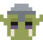
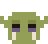
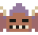

The window as decided (Orkboard, drawn with orkUI's parts only)
The whole project · through the Orkmaster
Results screen with the round's best answer
Routing
Round timer shows on every phone
Joining sections
Write the timer’s rules: seconds in each phase
Writing its section
Round length and grace time in game.json
Promised
Keep the seat when a socket reconnects

Doing
Reset the round timer when a player rejoins

Check failed
Results screen, first drawing
Drawing
Best-answer ribbon for the Results screen
Promised
Notes for the next version
What it madedocs/notes/next.mdCHANGELOG.md
Changes
Notes written by the leader
Title shortened by you
Date left out by a member alone
The table (the leaders' tabs with their heads, the Orkmaster's first with its crown; the Board's columns under them; a card lifted) and the hand in three places (at the left the deck, its top back sealed with the element of the first goal in line and the + card lying off it; in the middle the stacks of the goals that ask you, one size, a card's face its gem and its words on the card lifted, the question's here; at the right the discard with what is ready for main). No count anywhere: a stack's edges hint how many, and the tabs are the project's and its parties' alone. Press or hover a card: it leans toward the pointer.
Colour
Type
Title 16/20 pixel
Heading 14/16 pixel
Label 12/16 sans 600, caps
Button 13/16 pixel
Body 14/20 sans: More people try Orkline. Считаем установки каждую неделю. 0123456789 $20.00
Caption 12/16 sans: A goal asks · waits for idea 12
Needs youTarget: Balance merged into dev needs your answer tests failed
Meters, pips, hatching
37 % 83 % 97 %
Gem (a price, a share of the limits or a mark; 22 px, 24 on a phone)
$0.38$1–2?!—·4%83%97%
$1–2 Plan ready ? Asks you ! Failed
— Proposed 4% about 4% of Claude's week 83% the limit runs low
Reset the round timer4%about 4% of Claude's week
Rename a filespends nothing: no gem
Stat (a measured number)
5/16/2$0.38≈$0.403
5/1runs / sent back$0.38a run
Crystals (what is left of a tool)
70 %
60 %, the last kept
0 %
hatched: kept for tonight
Potion (a pool as a bottle: the mana left; 42 x 54 and .small 28 x 36, a 14 x 18 grid)
100 %62 %18 %, warns4 %, danger62 %, 4 % spent
100 %62 %18 %, warns4 %, danger62 %, 4 % spent
the liquid is --ork-mana while there is room, the alert at a warning, the danger at a danger; the level steps by an eighth, rounded up, so a share above 0 shows a row; the hatched cells are the share a card would spend
Portal (a goal's way into main: 130 x 140 and .small 104 x 112, a 26 x 28 grid)
opentaking: a card held over itsealednew: shimmers once
opentaking: a card held over itsealednew: shimmers once
open, on the tabletakingsealed
the swirl's light is --ork-portal (a signal: a goal can be played here), --ork-portal-hi while a card is held over it; only the swirl turns, a quarter turn at a time, 6 s a turn; a sealed portal is still, dim and crossed, with no sparks; under prefers-reduced-motion the swirl stands still and the shimmer is off; the caller adds the label and the line
Frame (the double frame of a raised thing)
$1–2Plan ready2 tasks, 1 check
?Asks youalert edge
!Faileddanger edge
Table (the surface the work lies on; a warm grey a step above the canvas, never a mark)
On the table now
Waits for you
Failed
Reading (a long text read through: the paper, the reading ink, the reading face)
Spec 62: the spec after the start
The owner wants to edit and discuss the spec with the leader, before the work starts and after it. Half of it is there: a goal's preview asks about one section at a time (ideas.say), and a plan not passed is made again by Re-plan. The body is a step below full ink, about 10:1, so a long page does not glare; a link, headings and bold keep full ink.
What it is, and is not
The person presses for a re-plan, never the model by itself.
Nothing is applied without the person's Take.
A quote, or what someone wrote, in the muted ink.
python tools/build_tokens.py
python -m pytest
part
builds
files
A. Host
§1–§4
core/idea_revise.py, its tests
B. Desktop
§5, §6
js/shell/preview.js
Elements (a goal's mark; 14 and 28 px)
meadowicedustvoidlavameadow dim
meadowicedustvoidlavameadow dim
Fewer steps to install
3 of 5 tasks
Faster first run
waits for main
Quiet nights
2 of 4 tasks
New goal
not yet read: dim
Moons (a goal's progress; 14 and 28 px)
newcrescenthalfgibbousfull
newcrescenthalfgibbousfull
The one moon and the void (a crescent alone, an empty ring)
moon, the signvoid, the elementcrescent, progress a goal that starts by itself later
moon, the signvoid, the elementcrescent, progress
Signs (every symbol the window draws; 14 and 28 px)
done failed at work starts by itself later asks you is in main waits for the build waits for it Play Pause a sound a clip a text Does Checks
New feature Fix a bug Clean up New screen New icon New logo Solve a pain Try an experiment A launch post A new metric A report Restructure An A/B test A landing page A post A tagline New mechanic New level Balance pass New character A release Store listing New sound
The goal types' signs at 28 px (14 x 14 in two tones, on a card, in each element; 14 px beside it is the 7 x 7)
meadowicedustvoidlavafeaturea wandcompassa drafting compassbuga stag beetletidya broomrestructurean anvil and its hammerscreena hand mirrorpicturea cut gemlogoa wax seal on a ribbontargeta heart with a plasterflaska bubbling flaskhorna firework rocketcharta dial gaugepagea scrollabtesta fork in the road, one way litlandinga signpostposta sealed lettertaglinea quill in an inkwellmechanica dielevela castlebalancea pair of scalescharactera crownreleasean open chest, alightstorea stall under a striped awningtunea lyrestepsan elf's curled shoe: the way walked
Tools (a race's tool for a pick of four: one shape, one zone that changes; 28 px, two tones, on a card)
orks · Techa shaman's drum with a spanner for its beater; what changes: the rune on its skina coga lightning bolta spirala tusk
elves · Design, Arta bow whose arrow is a brush; what changes: the brusha round brusha flat brusha brush with a dropa fan brush
goblins · Run, LiveOps, Dataa pickaxe (data mining); what changes: what it dug outa gema coina coga mushroom
gnomes · Marketinga crier's handbell; what changes: what rings out of itwaves of soundstarsa tunehearts (likes)
knights · Product, Game designa treasure map (the roadmap); what changes: the mark at the path's endan Xa stara hearta crown
skeletons · Releasean hourglass (the release date); what changes: its finiala candlea bonea gema ring to hang it by
Sword and shield (a squad's Does and Checks; its leader leads)
Leads
Does
Checks
the marks of a squad's two columns, never a state's sign
Emblems (the library; no face draws them until one is made a sign; 14 and 28 px)
The six leaders (each its race's higher form: the mark a leader wears is drawn in the head, as a head's detail; 48 x 44)
shamandryad

impfairyunicornlich
The ork shaman has ram's horns and braids on a deeper green, with the ork's face; the elf dryad a stag's antlers; the imp small horns and small dark wings on lava's red-brown; the gnome fairy large light round wings; the unicorn is the knight's helm in gold, with one horn off the brow and white feathered wings at its sides; the lich is Release's leader as it is. Product's members are the knights.
Every head of every tier (laborer, warrior, elder, and the peon's crown; 24 x 22 and 48 x 44)
 Routing
Routing Writing its section
Writing its section laborer
laborer warrior
warrior laborer
laborer
 laborer
laborer
 laborer
laborer
 warrior
warrior laborer
laborer
 elder
elder elder
elder elder
elder elder
elder